1.Android 12 H2.5D Touch Screen
2.Support blue-tooth stereo
3.Wifi Internet function (Massive APP download)
5.32GB ROM storage, storage extension: Max 64G storage TF card
6. Support USB TF card HDMI input
7.Built-in WLMA wireless Internet access, supports android APK
8.Supports Miracast and Airplay
9.Smoothly play 4K / 1080P video
10.Universal design suitable for all cars
11. Multiple brand car UI to choose from
12.Built-in Speaker
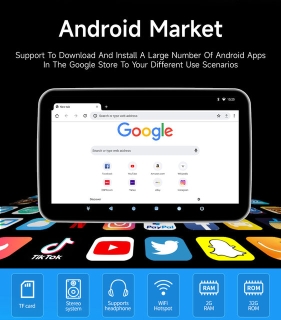
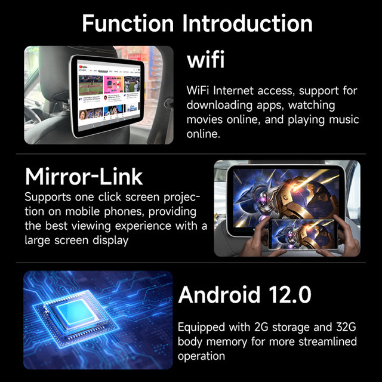
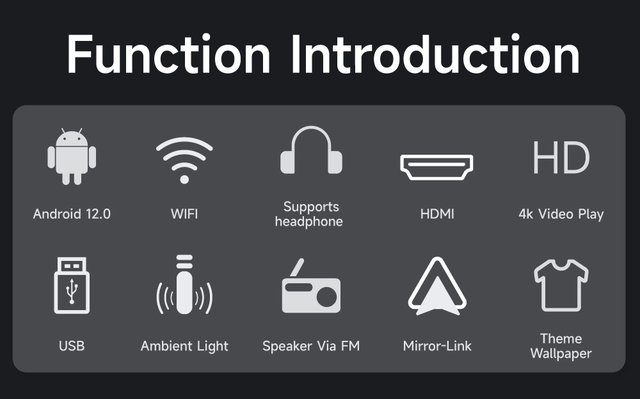
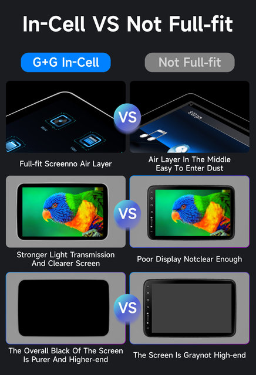
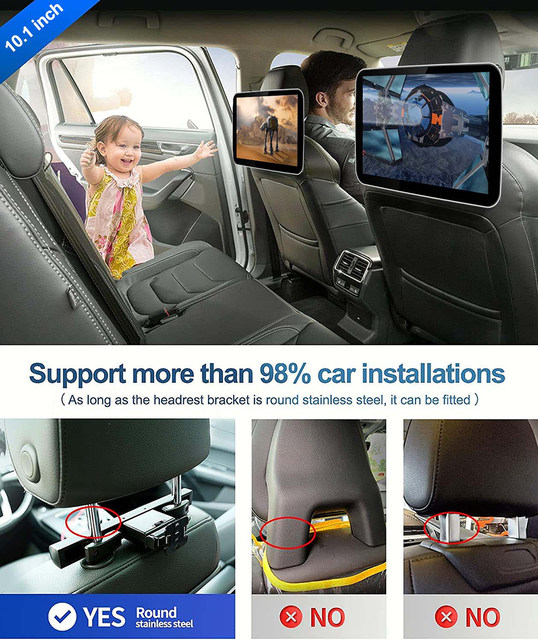
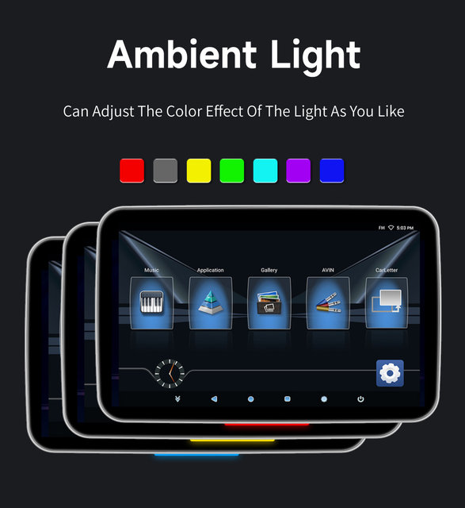
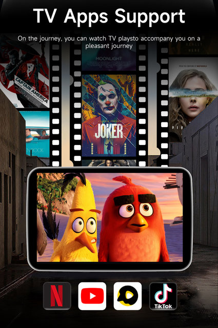
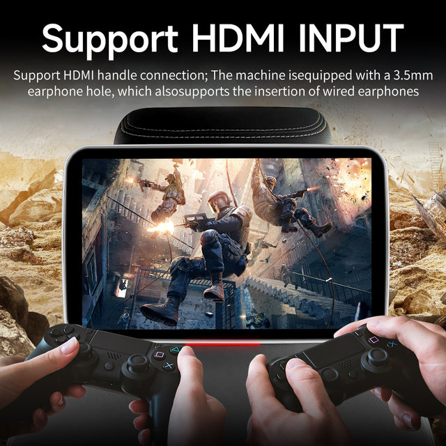
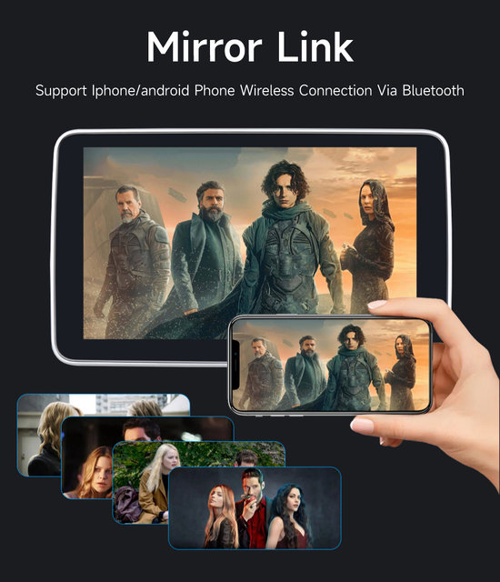
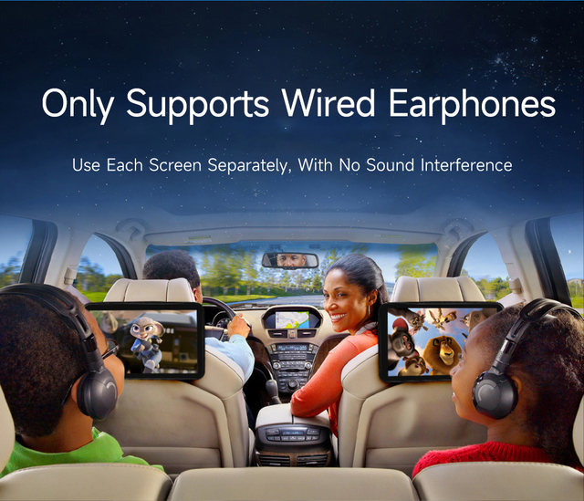
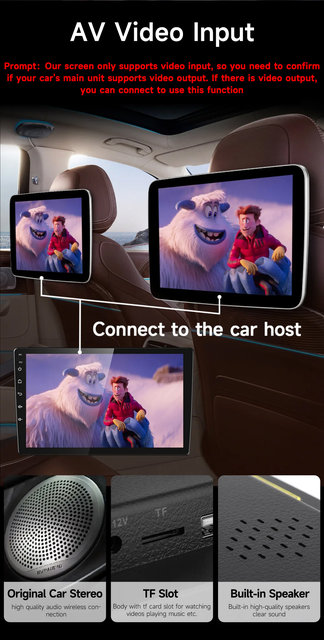
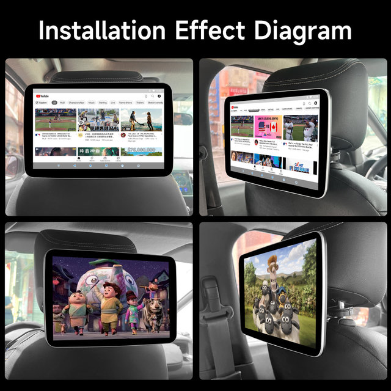
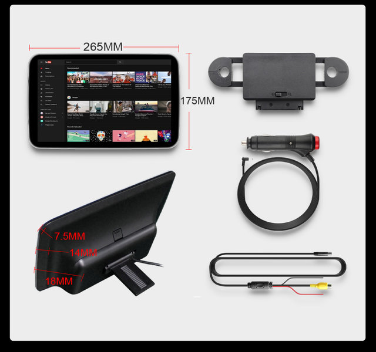
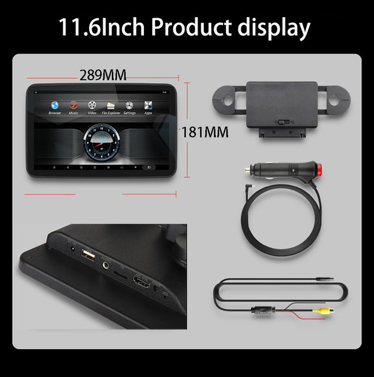
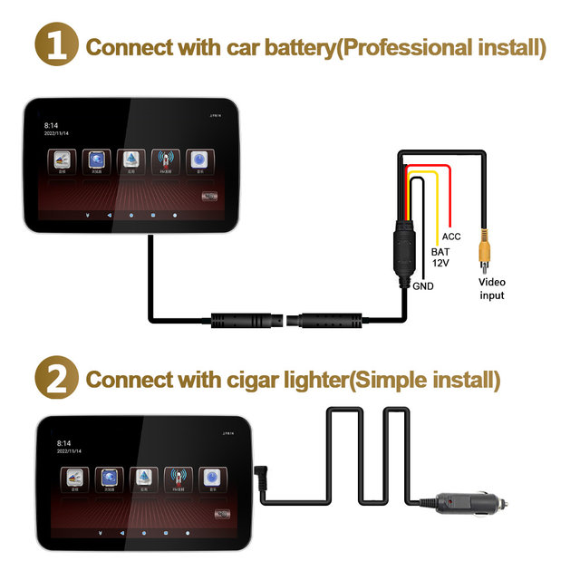
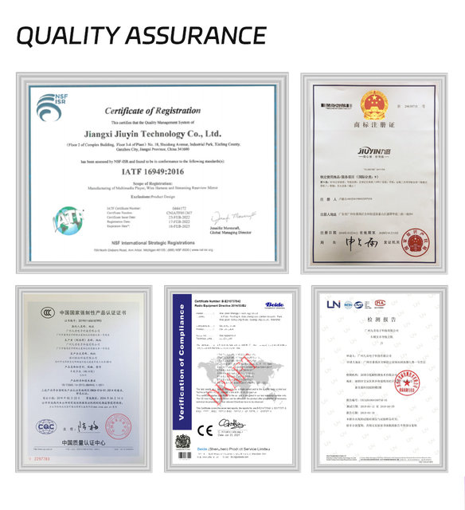
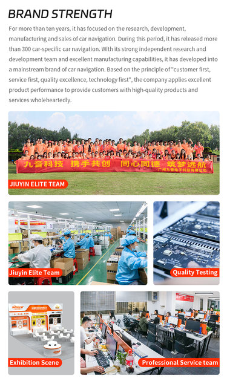
About us
1. We were established in 2009, We are the Top Brand in China now , We have our own brand stores on various platforms “JIUYIN Official Store” has Over 10 million fans, popular among customers. our goal is to keep working hard to make innovative hardware & software of the Car Multimedia player radio to give you that personalized experience
2. All products have been passed strict quality test before shipment, make sure high quality.
3. After verify payment will ship out within 24H from warehouse in Working day time.
4. If the product has a problem within 365 DAYS after receipt confirmation,Provide professional technical guidance or replace accessories for free ,return and refund within 15 days, or we will replace the new machine directly for you, but please contact us first to communicate（24H customer service）